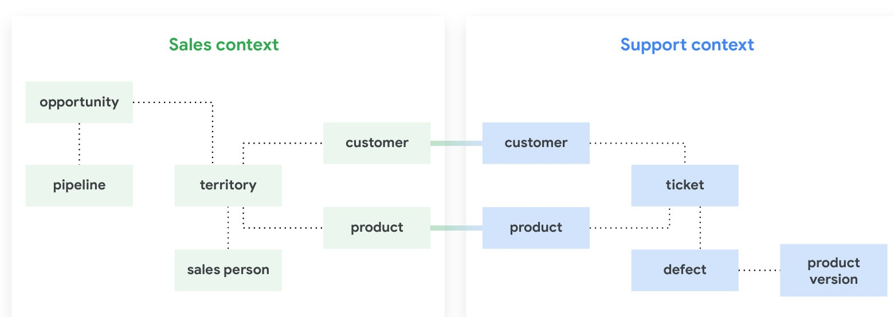
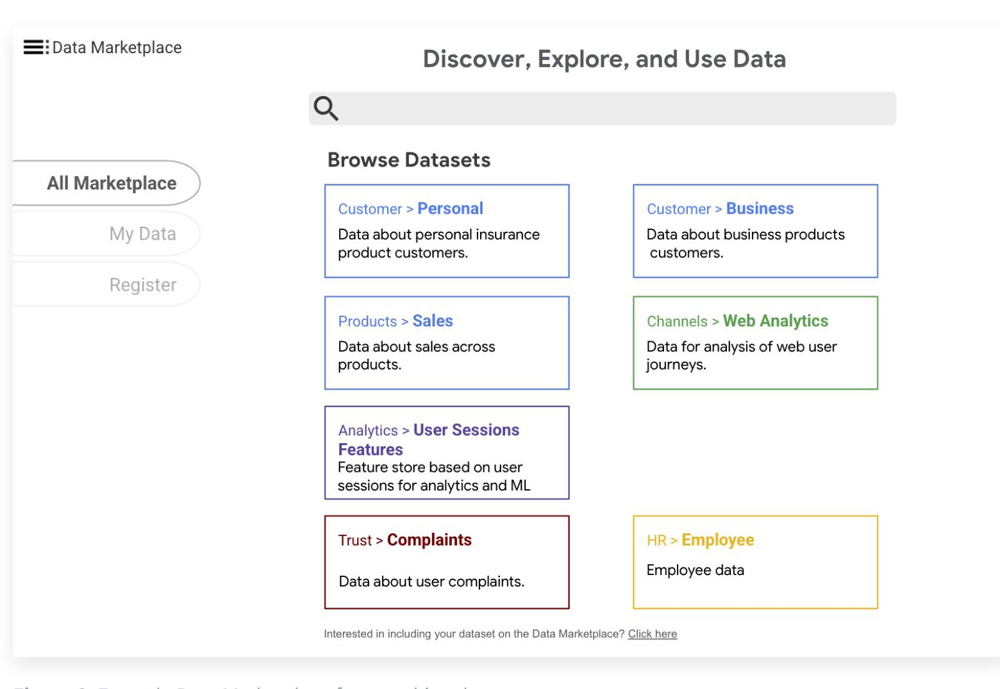
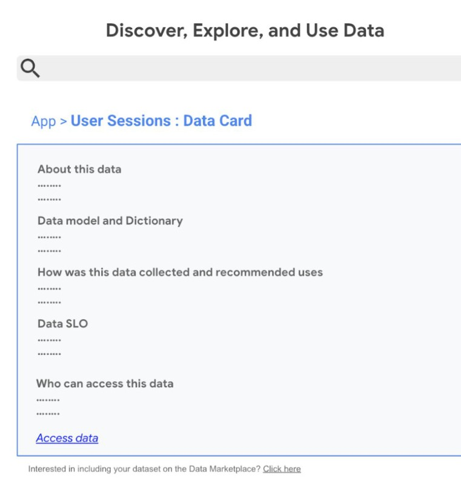
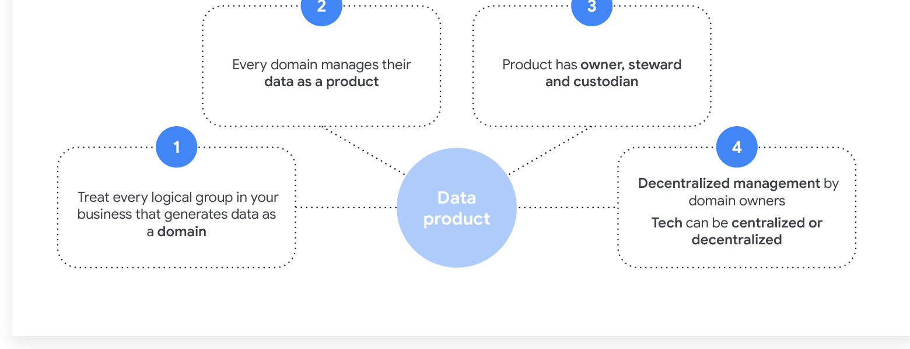
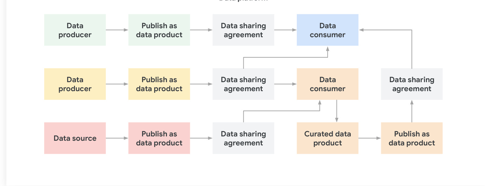
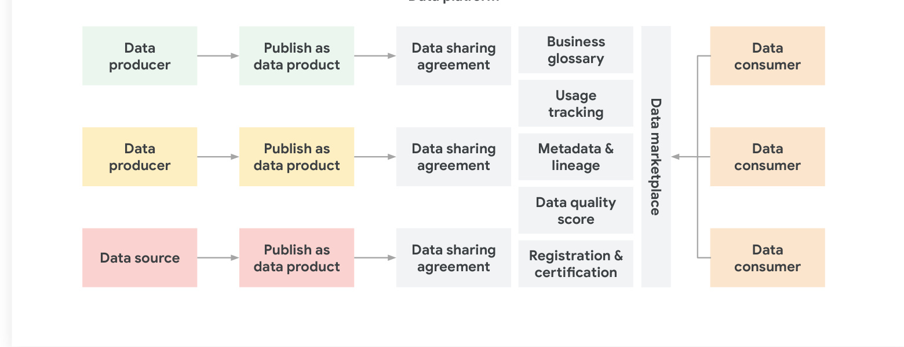
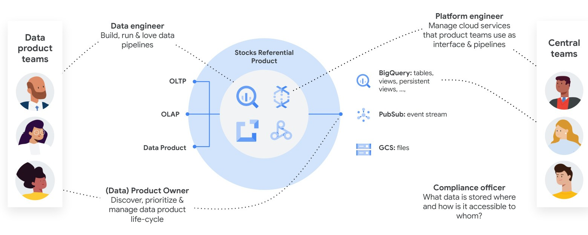
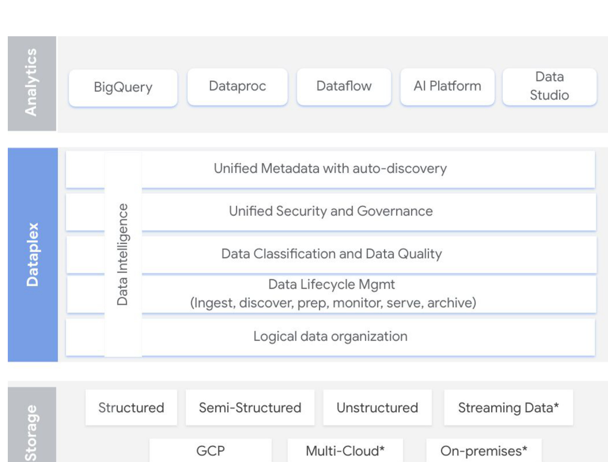
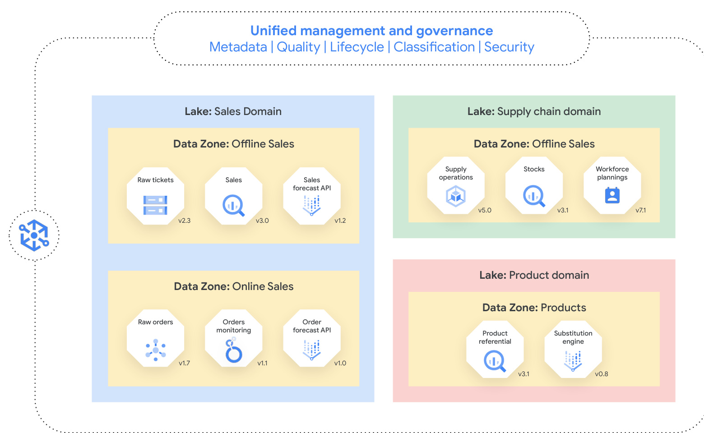
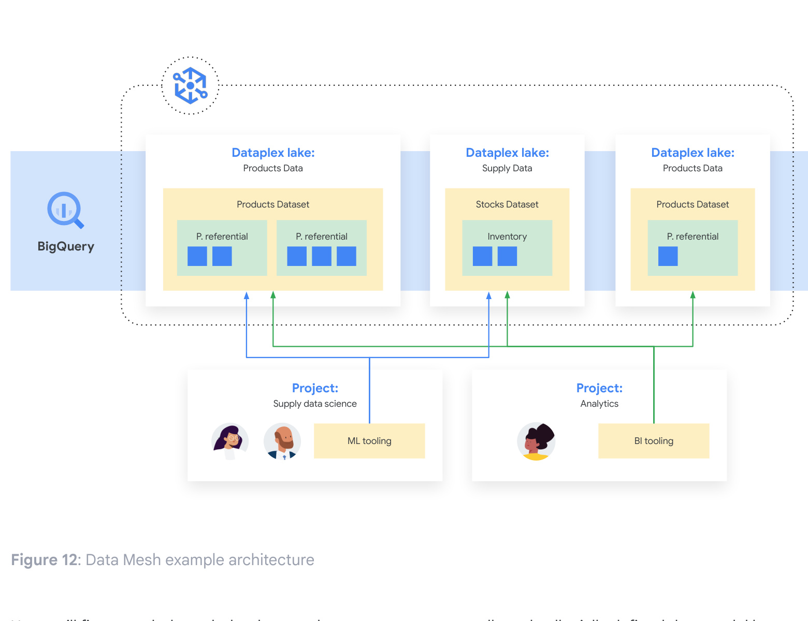

Content Outline
- 1 Why a New Data Operating Model Is Needed
- 1.1 Centralization vs. Decentralization Bottlenecks
- 2 The Four Core Data Mesh Principles
- 2.1 Domain Ownership and Data as a Product
- 2.2 Self-Service Platform and Federated Governance
- 3 Discovery Through a Federated Data Marketplace
- 4 Data Products and Metadata Management
- 5 Team Topologies and Roles
- 6 Self-Service Platform as a Scaling Layer
- 7 Governance, Interoperability, and Standards
- 8 Google Cloud Data Mesh Reference Architecture
- 9 Anti-Patterns and Adoption Risks
- 10 Transition Strategy and Execution Roadmap
1 Why a New Data Operating Model Is Needed
The transition to a Data Mesh is driven by the need to overcome the scaling limitations of traditional centralized data architectures. Organizations usually start by centralizing data into a single platform to reduce silos and simplify cost management. However, over time, this centralized model creates delivery bottlenecks and reduces the responsiveness of business domains.

The central data platform team often becomes a single point of failure. They are responsible for ingesting data from every corner of the enterprise, but they frequently lack the deep domain knowledge required to interpret and cleanse that data correctly. This leads to long lead times for new data requests and a decrease in overall data quality.
1.1 Centralization vs. Decentralization Bottlenecks
The opposite extreme—full decentralization without shared standards—is equally problematic. It introduces duplicated pipelines, low trust in data, and inconsistent governance outcomes. The Data Mesh approach aims to strike the right balance by decentralizing ownership to the teams that best understand the data, while maintaining centralized standards for interoperability and governance.

Figure M03.02 illustrates a Data Marketplace, where the tension between centralized control and decentralized autonomy is resolved. Instead of a "centralized bottleneck," domains are empowered to serve their own data through a shared, governed marketplace.
2 The Four Core Data Mesh Principles
The Data Mesh framework is built on four foundational pillars that transform data from a simple byproduct of operations into a first-class strategic asset. These principles define the roles, workflows, and accountability across business and technology teams.
2.1 Domain Ownership and Data as a Product
- Domain ownership: Accountability shifts to the teams closest to the business context. They are responsible for the entire lifecycle of the data.
- Data as a product: Data is no longer "just a table." It must be discoverable, trustworthy, and usable, with explicit ownership.

Each domain team publishes data products, and metadata is managed through Data Cards (shown in M03.03) that provide clear definitions, quality metrics, and ownership details to build trust.
2.2 Self-Service Platform and Federated Governance
- Self-service platform: A central team provides reusable infrastructure (templates, blueprints, automation) to reduce the technical burden on domain teams.
- Federated governance: A central body defines global policies, while domain-specific data stewards enforce them locally through automated tools.
3 Discovery Through a Federated Data Marketplace
In a Data Mesh, data products must be discoverable through a common search and access experience. A federated marketplace allows producers to publish their products and consumers to evaluate them without needing a central middleman to approve every transaction.

Figure M03.04 shows the building blocks of a data product, including the interfaces, metadata, and quality signals that enable discovery and consumption in the marketplace.

Figure M03.05 illustrates how consumers can become curation domains, aggregating data from multiple upstream domains to create new value.
4 Data Products and Metadata Management
A data product definition is separated from its underlying data. This allows the producer to change the physical storage without breaking the consumer's interface. Metadata is managed through governed templates that ensure consistency.

Figure M03.06 shows how federated data controls are applied at the point of consumption, ensuring that policies are enforced regardless of the underlying storage.
5 Team Topologies and Roles
Success in a Data Mesh depends on clear accountability. Google defines roles across four primary functions: Producers, Consumers, Governance, and Platform.

Figure M03.07 visualizes the structure of a data product, including the code, data, and infrastructure managed by the domain team.
6 Self-Service Platform as a Scaling Layer
The platform team builds the "paved paths" that domain teams follow. Their goal is to minimize collective technical debt by providing reusable templates for ingestion, storage, and processing.

Figure M03.08 shows Dataplex as the "single pane of glass" for discovery and governance, enabling the self-service platform to scale domain autonomy.
7 Governance, Interoperability, and Standards
Interoperability is the "glue" that holds the mesh together. It ensures that data elements have common definitions and boundaries across all domains.

Figure M03.09 illustrates how different domains interact while following shared governance standards for interoperability.
8 Google Cloud Data Mesh Reference Architecture
Google's reference architecture uses services like Dataplex, BigQuery, and Cloud IAM to implement the mesh. A key pattern is using BigQuery Authorized Views to expose data products.

9 Anti-Patterns and Adoption Risks
Adoption is an iterative transformation. Common risks include treating the platform as a project rather than a product, and ungoverned autonomy that leads to fragmentation.
10 Transition Strategy and Execution Roadmap
A practical transition starts with a Minimum Viable Platform (MVP). Organizations should select a high-value pilot to validate the model before scaling.
Key takeaways
- Data mesh overcomes centralized bottlenecks by decentralizing ownership to domain experts.
- Data products separate business meaning from physical storage through logical containers.
- Self-service platforms and federated governance are the essential enablers of domain autonomy.
- Success depends on organizational transformation as much as technical implementation.
- Google Cloud provides integrated services (Dataplex, BigQuery) to implement these patterns at scale.
Resources
Whitepaper: Build a modern, distributed Data Mesh with Google Cloud (PDF)
Architecture Guide: Data mesh architecture - Google Cloud Architecture Center